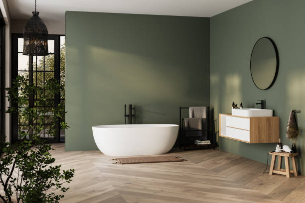

Terryville New York
info@freedomwalkintubs.pro
Terryville New York
info@freedomwalkintubs.pro

Experience comfort and safety with premium walk-in tubs in Terryville New York . Our expertly installed tubs feature slip-resistant surfaces and hydrotherapy options, ensuring accessibility and relaxation for every home.
Click Here To Call Us (877) 848-1711Enhance your bathing experience with our premium walk-in tubs, designed for comfort, safety, and accessibility. In Terryville New York we specialize in providing top-quality walk-in tubs that cater to individuals with mobility challenges or those simply seeking a relaxing soak in a safe environment.
Our walk-in tubs feature easy-to-open doors, low step-in thresholds, and secure seating to ensure you enjoy a worry-free bath every time. Equipped with advanced hydrotherapy jets and ergonomic designs, our tubs promote relaxation, improve circulation, and alleviate muscle pain. Whether you’re upgrading your bathroom for added safety or luxury, our range of customizable options ensures the perfect fit for your needs and home décor.
We pride ourselves on delivering unmatched customer service and professional installation in Terryville New York . Our team works closely with you to assess your bathroom’s layout and recommend the ideal solution for your space. Each tub is crafted with high-quality materials to ensure durability and long-lasting performance.
Don’t compromise on comfort or safety—choose a walk-in tub tailored to your lifestyle. Contact us today in Terryville New York to explore our collection and transform your bathroom into a haven of relaxation and security. Experience peace of mind with the best walk-in tubs in Terryville New York !
Residential & commercial Walk In Tubs
Quality services at affordable prices
Immediate 24/ 7 emergency services


When it comes to upgrading your bathroom in Terryville New York a walk-in tub can provide both luxury and practicality, enhancing your home's accessibility and aesthetic appeal. Walk-in tubs come in a variety of styles and designs to complement any home, ensuring a perfect fit for your needs and preferences.
One popular style for homes in Terryville New York is the soaking walk-in tub, designed for relaxation with a deep, comfortable interior. Its sleek lines and modern features make it a stylish addition to any bathroom. For homeowners who want a more therapeutic experience, the whirlpool walk-in tub offers soothing jets that target sore muscles and improve circulation, ideal for anyone seeking relief from stress or chronic pain.
For those looking for space-saving solutions in smaller bathrooms, the corner walk-in tub utilizes corner space efficiently, offering a compact yet luxurious design. Walk-in tubs with built-in seating are another great option, providing extra convenience and comfort. These tubs often come with wide entry doors, making it easier to step in and out without any hassle.
No matter the design, walk-in tubs offer valuable benefits for homeowners in Terryville New York from increasing property value to enhancing safety and comfort. Whether you’re remodeling your bathroom or installing a new tub, investing in a walk-in tub is a smart choice that brings both function and style to your Terryville New York home.
Residential & commercial Walk In Tubs
Quality services at affordable prices
Immediate 24/ 7 emergency services
Elevate your bathroom's design with our custom tile surrounds for walk-in tubs. By allowing you to choose colors, patterns, and finishes, custom tile surrounds enhance the aesthetic appeal of your bathroom while providing a practical solution to waterproofing and maintenance.
, our custom tile surrounds are crafted with precision to fit seamlessly around your new walk-in tub. This not only elevates the overall appearance of your bathroom but also reflects your unique style and preferences, making your bathing area truly yours.
When you collaborate with us for your tile surround needs, you receive expert guidance on design choices and materials. Our skilled installers ensure that the final product not only looks spectacular but also functions effectively for years of enjoyment.

Our Safe Step walk-in tubs are designed with your safety at the forefront. Featuring unique designs that allow for easy access and exit, these tubs provide a secure bathing option for individuals of all ages. Equipped with anti-slip surfaces, grab bars, and low entries, our tubs mitigate the risks associated with traditional bathing methods. At Walk In Tubs our goal is to provide peace of mind and ease of use with every installation. We pride ourselves on our safety-first approach, ensuring our products meet the highest standards, so you can bathe with confidence. By choosing us, you embrace a safer bathing experience tailored to your needs.

Walk-in tubs are not just a luxury; they provide numerous therapeutic benefits that enhance physical and mental well-being. The soothing jets and warm water promote relaxation and alleviate muscle tension while providing a safe bathing experience. Our therapeutic walk-in tubs are designed to engage both the body and mind, offering relief from everyday stresses and physical discomforts. At Walk In Tubs, we emphasize the wellness benefits that come with our walk-in tubs . Our expert staff will help you understand how these tubs can transform your bathing routine into a rejuvenating experience. By choosing us, you are investing in a healthier, happier lifestyle.

Investing in a walk-in tub is a significant decision, which is why we strive to offer various financing options tailored to meet your budgetary needs. At Walk In Tubs, we believe everyone should have access to safe and comfortable bathing solutions. Our financing plans are designed to ensure affordability so that you can prioritize your safety without financial strain. Our experienced team will guide you through your options, helping you find the best payment plan that suits your financial situation. Choosing us not only means you get a quality product but also the flexibility to invest in your comfort and safety.

Everyone deserves a safe and enjoyable bathing experience without breaking the bank. Our affordable walk-in tub solutions are designed to provide high-quality products without compromising on safety features and comfort. At Walk In Tubs, we cater to clients in Terryville New York looking for budget-friendly options that never compromise on quality. Our dedicated team guides you through selecting the best walk-in tub for your needs, ensuring that your investment is both economical and reliable. By choosing us, you are assured of value for your money and a commitment to your safety and satisfaction.
Your walk-in tub will serve you best with regular maintenance and timely repairs. Our expert maintenance services ensure your tub remains functional, clean, and beautiful throughout its lifetime.
, we provide comprehensive maintenance plans to suit any schedule, ensuring longevity and performance. Our knowledgeable technicians can perform inspections, repairs, and basic upkeep, guaranteeing a seamless experience every time you use your tub.
When you partner with us, you benefit from our commitment to ongoing service. Fast response times and expert support will keep your walk-in tub in optimal condition, allowing you and your loved ones to enjoy ultimate peace of mind.

For those suffering from chronic pain or discomfort, our walk-in tubs provide a viable solution that incorporates the therapeutic benefits of warm water and hydrotherapy. These tubs help alleviate various pain conditions, providing a sanctuary where you can relax and soothe sore muscles and joints.
, our walk-in tubs designed for pain management include features that promote healing, such as adjustable jets, seat warmth, and ambient lighting to create a tranquil and comfortable setting.
Choosing our services means recognizing your pain management needs. Our professionals consult with you to understand your unique challenges and tailor solutions that enhance your comfort and overall well-being.

Embracing the aging-in-place philosophy means enhancing safety and usability in your home for the long term. Our walk-in tubs are designed with aging-in-place solutions in mind, catering to the unique needs of seniors who wish to maintain their independence.
, we offer features such as easy-to-use controls, grab bars, and adjustable showerheads, which support seniors in safely bathing while avoiding the hazards often associated with traditional tubs. Our walk-in tubs enable older adults to bathe independently, addressing mobility challenges without sacrificing comfort.
When you choose our walk-in tubs, you are investing in safety, comfort, and confidence. Our industry expertise enables us to provide tailored solutions that help your loved ones enjoy their golden years in the comfort of their own home.
Years Experience
Expert Technicians
Satisfied Clients
Compleate Projects
At Freedom Walk-In Tubs, we understand the importance of safety, comfort, and independence, which is why we proudly offer top-of-the-line walk-in tubs designed to transform your bathroom experience. Serving Terryville New York and surrounding areas, our tubs are engineered to provide peace of mind and a sense of freedom to individuals with mobility challenges or those seeking a luxurious, therapeutic bathing experience.
Our walk-in tubs are built with high-quality materials and advanced features, ensuring durability and safety. Equipped with slip-resistant floors, low-threshold entryways, and easy-to-use controls, our tubs allow for hassle-free access, reducing the risk of slips or falls. Plus, with built-in hydrotherapy jets, air massagers, and heated surfaces, every bath becomes a rejuvenating escape from the stresses of the day.
What sets Freedom Walk-In Tubs apart is our commitment to delivering a personalized experience. We work closely with our customers to understand their unique needs, ensuring the perfect fit for their bathroom space and requirements. Our installation team is highly trained, ensuring each tub is installed with precision and care, providing you with years of reliable service.
We are proud to serve Terryville New York and the nearby communities, helping people regain their independence while enhancing their daily bathing routines. If you're looking for a safe, comfortable, and enjoyable bath experience, trust Freedom Walk-In Tubs to deliver exceptional results.
Choose us for quality, care, and the best in walk-in tub solutions across Terryville New York .
If you're looking to transform your bathing experience into a serene, luxurious retreat, our luxury walk-in tubs are the answer. Designed with elegance and comfort in mind, these tubs provide the ultimate in relaxation while ensuring accessibility and safety. Our luxury models feature high-end materials, customizable colors, and unparalleled finishes designed to elevate any bathroom aesthetic.
Investing in a luxury walk-in tub not only enhances your bathroom's appearance but also provides therapeutic benefits through hydrotherapy options. With advanced technology and user-friendly controls, you can enjoy customizable water temperatures, massage jets, and soothing air baths—all designed to maximize your comfort. Our team of experts is dedicated to guiding you through every step of the selection and installation process, ensuring your tub fits perfectly into your space.
Additionally, all our walk-in tubs meet rigorous safety standards, making them an exceptional choice for seniors and individuals with mobility challenges. By choosing us, you can expect superior craftsmanship, an unwavering commitment to quality, and reliable customer support before, during, and after installation.
Hydrotherapy has been recognized for its therapeutic benefits, including pain relief and improved circulation. Our hydrotherapy walk-in tubs are designed with state-of-the-art jet technology that harness the power of water to provide a soothing and rejuvenating bathing experience. They stimulate muscle relaxation, relieve joint pain, and promote overall well-being. At Walk In Tubs, we understand the importance of stress relief and physical health and offer tailored solutions in Terryville New York that fit your lifestyle. Each tub is designed with safety and ease of use in mind, ensuring that you can enjoy the therapeutic benefits without worry. Our dedicated team is here to help you choose the perfect hydrotherapy walk-in tub for your home, and we pride ourselves on our exceptional customer service and craftsmanship.
Designing bathrooms with limited space can pose a real challenge. Our compact walk-in tubs are the perfect solution, combining functionality with design to ensure that even small spaces can be transformed into luxurious retreats. These specially designed tubs maximize every inch while offering the safety features and comfort you've come to expect from our products.
In Terryville New York we understand the intricacies of small bathroom design. Our compact walk-in tubs come with features such as built-in seating, grab bars for added safety, and a range of customizable options. You don’t have to sacrifice comfort for size; our tubs are designed to offer a full bathing experience even in the smallest of areas, promoting independence while ensuring a safe bathing experience for all.
Why trust us for your compact walk-in tub needs? With years of experience installed in homes throughout Terryville New York we focus on your needs first. Our expert team is dedicated to providing tailored solutions that fit within your layout and budget. From installation to maintenance, our customer support is always just a call away.
Accessibility is paramount for individuals with mobility challenges, and our wheelchair-accessible walk-in tubs are designed to meet these needs without sacrificing style. Positioned as industry leaders we provide tubs that combine ease of access with luxurious features, ensuring a dignified and enjoyable bathing experience for everyone.
Our wheelchair-accessible models boast wider doors, walk-in thresholds, and ample internal space, ensuring an effortless transfer from your wheelchair to the tub. With additional safety features like grab bars and non-slip surfaces, you can relax knowing that your safety is our top priority.
Customizing your wheelchair-accessible tub to fit seamlessly into your existing bathroom is our specialty. By choosing us, you benefit from our commitment to quality craftsmanship and expert installations. From the initial consultation to post-installation support, we are here to ensure your satisfaction with your new bathing solution .
Experience the invigorating sensation of air jet therapy in our walk-in tubs . Designed for those who seek not only safety but also relaxation, our air jet therapy tubs provide a gentle, bubbling massage that soothes sore muscles and refreshes the spirit. These tubs are equipped with a unique air jet system that creates a spa-like experience in your own home.
Choosing our air jet therapy walk-in tubs means investing in a sanctuary of comfort. Our expert installation team ensures that every facet of your new tub is perfectly configured for your home, offering both safety features and luxurious amenities. Our tubs also come with customizable settings, allowing you to adjust the intensity and duration of your hydrotherapy experience. With our commitment to customer satisfaction and product excellence, we stand out as the premier choice for walk-in tubs with air jet therapy .
Enjoying a bath can be transformed into a luxury experience with walk-in tubs featuring heated seats. Imagine sinking into warm water with the added comfort of a heated seat, allowing you to relax and unwind. Our walk-in tubs with heated seats offer the ultimate indulgence, particularly in colder weather, ensuring maximum comfort every time you step in. At Walk In Tubs, we focus on merging safety with luxury in Terryville New York . Our experienced team is dedicated to guiding you through the selection and installation process, making it easy for you to enjoy a cozy and safe bathing experience. Choosing us means you are investing in your comfort and wellbeing, all while receiving exceptional service tailored to your needs.
Experience faster drainage with our innovative dual-drain system walk-in tubs, specifically designed for enhanced safety and convenience. No one enjoys sitting in a tub full of water while waiting for it to drain, making our dual-drain systems an incredible feature for those who prioritize efficiency.
Our tubs feature two drains strategically placed for quick water removal, allowing for a swift exit from the tub without the fear of slipping or falling. This feature is particularly beneficial for seniors and individuals with mobility challenges who require a safe and prompt bathing experience.
Choosing us for your dual-drain walk-in tub installation means you’re selecting a trusted partner committed to quality and customer satisfaction . Our experienced team will provide expert guidance in selecting the right tub for your needs and will ensure a professional installation with minimal disruption to your home.
A commitment to inclusivity is at the core of our bariatric walk-in tubs, designed to accommodate users of all shapes and sizes. The robust structure and spacious interiors provide confidence and comfort for individuals with higher weight capacities, ensuring everyone can enjoy the luxury of a safe bathing experience.
Our bariatric walk-in tubs are crafted with high-quality materials that guarantee strength and safety without compromising on aesthetics. In Terryville New York we offer customized options to meet your specific needs, including wider openings, reinforced seating, and enhanced safety features that help foster independence.
Choosing us means choosing a company that values every customer. Our knowledge and understanding of unique requirements allow us to provide tailored solutions while ensuring the highest safety standards are met. Our expert installation teams ensure that your tub is set up correctly to maximize your bathing experience.
For those who appreciate the simplicity and joy of a long soak, our soaking walk-in tubs are the ideal choice. These tubs are designed for deep, relaxing baths, allowing you to immerse yourself completely in soothing water. With various depth and width options, our soaking tubs cater to all preferences.
, our soaking walk-in tubs are all about creating a luxurious retreat within your home. Their sleek design and therapeutic water depth let you unwind, helping alleviate stress and anxiety while revitalizing your body and mind.
Why choose us? Our dedication to quality means that every tub is made from durable materials designed to withstand everyday use. We guide you through every step, from choosing the perfect soaking tub to professional installation and maintenance, ensuring you enjoy an unparalleled bathing experience without worries.
Share the joy of relaxation with our two-person walk-in tubs . Designed for couples or caregivers and their loved ones, these spacious tubs offer the comfort and safety of a walk-in design while accommodating two bathers. With features like dual seating and independent controls, our tubs are the perfect solution for shared bathing experiences.
Choosing our two-person walk-in tubs means choosing a shared experience that enhances connection and well-being. Our installation experts ensure that your new tub is safely and efficiently integrated into your space, allowing you to enjoy quality time with loved ones while prioritizing safety. Come experience the luxury of relaxation and companionship with our expertly crafted walk-in tubs.
Tailoring your bathing experience starts with our custom walk-in tub installation services. Every home is different, and our professional team specializes in creating solutions that fit your unique space, needs, and budget. Whether you require specific measurements or tailored enhancements, we provide customized installations that transform your bathroom into a relaxing retreat.
In Terryville New York we work closely with you to ensure every detail of your custom installation meets your specifications. From personalized design choices to features like non-slip flooring and adjustable jets, we strive to ensure your new walk-in tub meets your specific expectations and comfort levels.
With our expert installation teams, you will receive unparalleled service from consultation to completion. Our years of experience in the industry guarantee a seamless installation process, allowing you to begin enjoying your customized soaking experience in no time.
Converting your existing bathtub into a walk-in tub is a fantastic way to enhance safety while maintaining the versatility of your space. Our expert team at Walk In Tubs specializes in transforming your traditional bathtub into a safe and luxurious walk-in solution. In Terryville New York we understand the importance of accessibility in every home, and our conversion services help you achieve that without the need for a complete bathroom renovation. We take care of every detail to ensure the installation process is smooth and efficient, making your transition to a safer bathing environment as seamless as possible. By choosing us, you are making a smart investment in your safety and comfort.
As we age, ensuring safety and accessibility in the bathroom becomes increasingly important. Our walk-in tubs for seniors are specifically designed to meet the needs of older adults, featuring easy-to-use controls, low thresholds, and non-slip surfaces to prevent falls.
, we prioritize the safety and comfort of seniors. Our walk-in tubs not only provide independence but also offer therapeutic benefits that enhance mobility and relaxation, promoting a better quality of life.
Choosing us means placing your trust in a company that truly understands the needs of senior customers. We provide personalized consultations to identify the best solutions for you or your loved one, along with exceptional installation services supported by our dedicated customer care team.
The versatility and functionality of our walk-in tubs with shower combos make them an ideal addition to any bathroom. These innovative solutions allow you to enjoy the comforting soak of a walk-in tub while also providing the convenience of a quick shower, making them perfect for users with varying bathing preferences .
Our tubs are designed for easy access, featuring anti-slip surfaces and grab bars, ensuring safety during both bathing options. This dual functionality not only improves usability but can also add significant value to your home, making it a worthwhile investment.
Choosing us for your installation means receiving a high-quality product tailored to meet your specific needs. Our expert team is here to assist you in selecting the perfect model that balances safety, style, and comfort. Enjoy the best of both worlds with our walk-in tubs with shower combos.
Sustainability has become a key concern for homeowners, and our eco-friendly walk-in tubs fit perfectly into this vision. Designed with water-efficient features and sustainable materials, these tubs are not only a step towards reducing water usage but also come with energy-efficient heating systems. At Walk In Tubs, we are passionate about helping our customers make environmentally conscious choices for their bathrooms. Our eco-friendly tubs are crafted to provide both comfort and a reduced carbon footprint. Choosing us means investing in a product that aligns with your values while enjoying the luxury and safety walk-in baths offer.
For places where safety and accessibility are paramount, especially in public facilities and homes of seniors or individuals with disabilities, ADA-compliant walk-in tubs are essential. These tubs are designed with specific features such as grab bars, low thresholds, and adjustable spray fixtures that comply with the Americans with Disabilities Act. At Walk In Tubs, our team in Terryville New York is dedicated to providing safe bathing solutions that uphold the highest standards of accessibility. We ensure you receive a product that meets your needs and complies with relevant regulations, providing peace of mind for you and your loved ones. When you choose us, you’re making a commitment to safety and dignity for all.
Time is essential when it comes to home renovations; thus, our fast-install walk-in tubs are designed to be installed quickly without sacrificing quality. Our expert installation team uses efficient techniques to minimize disruption to your daily routine, making the transition smooth and hassle-free.
, our fast-install tubs provide an accessible bathing solution within a short timeframe. Whether you’re in a hurry or simply want to enjoy your new bath, we can accommodate your schedule while ensuring that the installation meets our high standards of excellence.
Choosing us for your installation means having a dedicated team that values your time and focuses on delivering quality service quickly. Our aim is to transform your bathing experience faster than you thought possible, all while being backed by superior customer support.
Installing a walk-in tub in your home in Terryville New York brings a wide array of benefits, particularly for those seeking increased safety, comfort, and independence. These tubs are designed with accessibility in mind, offering an easy entry and exit, making them ideal for seniors or anyone with mobility challenges.
1. Enhanced Safety and Independence
Walk-in tubs are equipped with features like low-step entries, non-slip flooring, and built-in grab bars, significantly reducing the risk of slips and falls. This makes them a great choice for Terryville New York residents, as they can enjoy a relaxing bath without worrying about their safety.
2. Improved Comfort and Therapeutic Benefits
Many walk-in tubs in Terryville New York are equipped with advanced features such as air jets, hydrotherapy, and heated surfaces, offering soothing relief for sore muscles and joint pain. The therapeutic benefits of these tubs can promote overall health and relaxation, making them a worthwhile investment for those with chronic pain or stiffness.
3. Increased Home Value
Investing in a walk-in tub can increase the value of your home in Terryville New York especially if you plan to sell in the future. Homebuyers value accessibility features, and a walk-in tub is an attractive addition for those seeking a safe, comfortable living environment.
4. Easy Maintenance and Long-Lasting Durability
Walk-in tubs are designed for low maintenance and built to last. With features like durable materials and easy-to-clean surfaces, they offer long-term reliability for homeowners in Terryville New York making them a cost-effective solution for bath safety.
Consider a walk-in tub today to enhance your comfort, safety, and peace of mind in Terryville New York .
Terryville is a census-designated place (CDP) in the Town of Brookhaven, Suffolk County, New York, United States. The population was 11,849 at the 2010 census.
Absolutely! Freedom Walk In Tubs provides a variety of customization options to match your preferences and needs in Terryville New York .
Yes, walk-in tubs are equipped with safety features to minimize fall risks, making them ideal for residents .
The cost varies based on the features and installation requirements. Contact Freedom Walk In Tubs for a free estimate tailored to your needs .
Freedom Walk In Tubs offers a wide range of walk-in tubs, including soaker tubs, hydrotherapy tubs, and bariatric tubs, in Terryville New York .
Yes, Freedom Walk In Tubs specializes in bathtub-to-walk-in tub conversions for homeowners .
Yes, walk-in tubs from Freedom Walk In Tubs are designed to meet ADA standards, ensuring accessibility .
Walk-in tubs are low-maintenance and built to last. Freedom Walk In Tubs offers durable products with easy cleaning options .
Yes, hydrotherapy features in walk-in tubs can alleviate arthritis pain and improve joint mobility for residents .
Yes, walk-in tubs are designed with safety features like grab bars, non-slip surfaces, and low thresholds, making them ideal for seniors .
Yes, Freedom Walk In Tubs offers warranties to ensure peace of mind and protect your investment in Terryville New York .
Freedom Walk In Tubs provides expert consultations to help you choose the perfect walk-in tub for your needs .
Yes, Freedom Walk In Tubs offers walk-in tubs with hydrotherapy features to improve your bathing experience .
Modern walk-in tubs are designed to be water-efficient without compromising functionality. Freedom Walk In Tubs offers eco-friendly options .
Standard walk-in tubs vary in size, but Freedom Walk In Tubs can provide options that suit your bathroom .
Walk-in tubs enhance safety, comfort, and property value, making them a great investment for homeowners .
Contact Freedom Walk In Tubs today to schedule a free in-home consultation .
Yes, Freedom Walk In Tubs provides flexible financing options to make your walk-in tub installation affordable .
Installation typically takes one to two days, depending on your bathroom setup. Freedom Walk In Tubs ensures quick and professional service in Terryville New York .
Yes, modern walk-in tubs from Freedom Walk In Tubs are energy-efficient and designed to minimize utility costs .
Professional installation is recommended to ensure safety and functionality. Freedom Walk In Tubs provides expert installation .
Walk-in tubs provide hydrotherapy, which can help relieve pain, improve circulation, and reduce stress for residents .
Yes, Freedom Walk In Tubs offers compact designs that fit perfectly in small bathrooms across Terryville New York .
Yes, Freedom Walk In Tubs frequently offers promotions to make walk-in tubs more affordable for customers in Terryville New York .
Most walk-in tubs are designed to fit standard bathtub spaces. Freedom Walk In Tubs can assess your bathroom and provide recommendations.
Look for safety features, therapeutic jets, quick-drain systems, and comfortable seating. Freedom Walk In Tubs offers customized options.
Walk-in tubs provide safety, comfort, and therapeutic benefits, especially for seniors or individuals with mobility challenges. Freedom Walk In Tubs offers high-quality solutions to enhance your bathing experience .
Yes, Freedom Walk In Tubs offers models with quick-drain systems for added convenience .
The process involves removing your old tub, making any necessary adjustments, and installing the walk-in tub. Freedom Walk In Tubs ensures a seamless process in Terryville New York .
Yes, walk-in tubs are versatile and can be enjoyed by people of all ages .
Cleaning is simple with non-abrasive cleaners and regular maintenance. Freedom Walk In Tubs provides guidance for proper care in Terryville New York .
I’m so glad I chose Freedom Walk In Tubs in Terryville New York [State Abbreviation]. The installation was fast, and the tub is exactly what I needed for safety and comfort. I can now enjoy my bath with confidence. I highly recommend their services to anyone in need.
Profession
From the initial consultation to the final installation, Freedom Walk In Tubs in Terryville New York [State Abbreviation] was nothing short of professional. The walk-in tub has made such a positive difference in my life. It’s safer and more convenient, and I’m extremely satisfied with the outcome.
Profession
What a difference Freedom Walk In Tubs has made! The team in Terryville New York [State Abbreviation] was fantastic to work with. My new walk-in tub is everything I needed and more. It looks great, works wonderfully, and provides the safety I’ve been wanting for years.
Profession
Terryville NY Walk In Tubs Pros
(877) 848-1711
info@freedomwalkintubs.pro
09.00 AM - 09.00 PM
09.00 AM - 12.00 PM